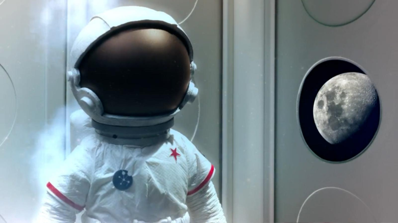

Mira cuál será la primer oveja en un viaje espacial
Un popular personaje se prepara para hacer un viaje a casi medio millón de kilómetros de la Tierra. Será un tripulante en la misión Artemis I de la NASA.
Un popular personaje se prepara para hacer un viaje a casi medio millón de kilómetros de la Tierra. Será un tripulante en la misión Artemis I de la NASA.